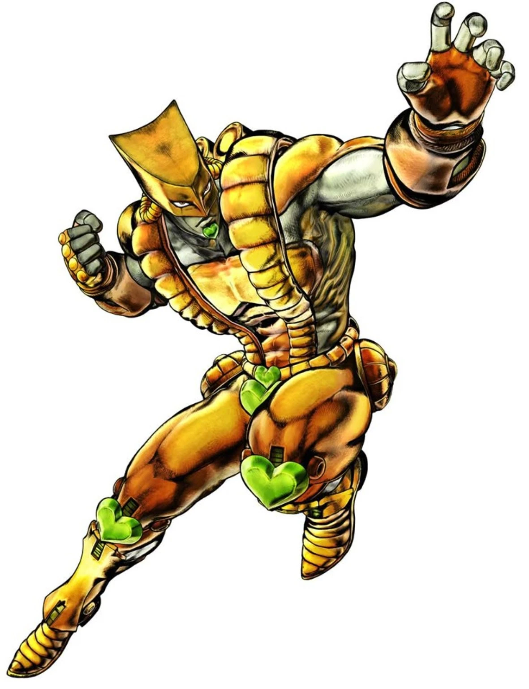

101BEGINNER GUIDE
Getting Started / Core Basics
BEGINNER GUIDE
Arrow → summon → levels → aiming → Barrage → projectile guard → PvP. One page, no archaeology required.
Open Beginner Guide →
The actual play guide for Project JoJo: find the Arrow, awaken a Stand, level it up, learn the weird stuff, then turn four buttons into a fighting style. Every gameplay value here was re-checked against mod v0.23.0.237.


The homepage does not need to become a textbook. Open one guide, learn the basics, then go straight to your Stand.
Arrow → summon → levels → aiming → Barrage → projectile guard → PvP. One page, no archaeology required.
Open Beginner Guide →Each page now includes current v237 skill values, the Stand's real mechanic, and a strategy section built around what the code actually does.
Five-step pressure, a rising crit meter, Star Finger, and a short but deadly Time Stop.
Open full Stand guide →
Heavy hits, knives, and the longest Time Stop in the current roster.
Open full Stand guide →Read the attack, slip the hit, and turn bad positioning into your advantage.
Open full Stand guide →
Fight to build Restore, then spend it to heal, repair, or send glass back to a marked target.
Open full Stand guide →
Dash, Pull, and ERASE all fight for the same Space Gauge. Spend it like you mean it.
Open full Stand guide →
Mark the battlefield, choose when it blows, and let SHA keep the pressure moving.
Open full Stand guide →
A true hit-and-run Stand. Movement is not downtime — movement is your resource engine.
Open full Stand guide →
Ranged fire, lane control, big area pressure, plus a utility skill for when the flames get out of hand.
Open full Stand guide →
Pick the one target that absolutely cannot be allowed to move. Then make it heavy.
Open full Stand guide →A close cursor no longer cuts down a long skill. The move uses its real maximum reach and checks the first body on the attack line. Walls, doors, windows and vehicles still matter.
Supported offensive Barrages can collide when players are within about 5.25 tiles and are genuinely facing/aiming into each other. Clash hits cancel against each other before normal damage.
Direct support includes TW Knife, SC Rapier Shot and CD Glass/Homing. Vanilla firearms have a native per-hit hook, but live B42 validation across SP / Host / Dedicated is still required before calling firearm coverage complete.
SP gets 5 seconds. TW gets 9. Damage dealt to frozen targets is banked and released when time moves again. SP/TW users caught inside another stop can fully charge their own Time Stop to earn a finite movement window.
An active or pending Time Stop blocks a new full Time Erase. If Erase existed first, the incoming Stop spends its duration against the remaining Erase time. Only the excess becomes actual stopped time.
Server owners can tune sound volume, Arrow drops, Stand damage, Stand Level, test Arrows and Infinite Stand Arrow. Make it generous. Make it cruel. That part is yours.
Real-range First-Contact • 240 ms Barrage contact grace / up to 3 catch-up hits • TH Pull 21.875 tiles • Echoes Barrage 0.026 → 0.060 • Barrage Guard for SP/TW/CD/SC/KC
Directional First-Contact aiming and live Barrage steering.
SP / Host / MP core-load hotfix and duplicate-event guards.
MP fixes for pending attacks, Time Stop, PvP target filtering, downed/crawling hit capsules, TH Pull pose and KC clone.
SP/TW/KC Time Dash ×2.5 • MR Fireball became free and grants +4 Gauge on a real hit • CD offensive Restore gain reduced by 40%.